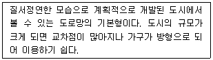
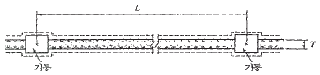
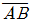
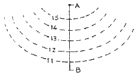
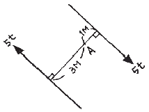

조경산업기사 (2008-05-11 기출문제)
1과목: 조경계획 및 설계
1. 다음 설명은 도로망 구성 패턴 중 어디에 해당되는가?

- cul-de-sac형
- 방사환상형
- loop형
- 격자형
(정답률: 83%)

2. 조경 계획 및 설계의 일반과정으로 옳은 것은?
- 목표수립→현황종합→현황분석→기본계획→기본구상→기본설계→실시설계
- 목표수립→현황분석→현황종합→기본구상→기본계획→기본설계→실시설계
- 현황분석→현황종합→목표수립→기본설계→기본계획→기본구상→실시설계
- 현황분석→현황종합→목표수립→기본계획→기본구상→기본설계→실시설계
(정답률: 60%)
3. 도시공원 중 도보로 7~8분, 유치거리 500m 정도로 하고 규모는 1만제곱미터 이상이 표준인 도시공원은?
- 어린이공원
- 도보권근린공원
- 근린생활권근린공원
- 도시지역권근린공원
(정답률: 48%)
4. 가로망 형태인 쿨데삭(cul-de-sac) 형식에 대한 설명으로 부적합한 것은?
- 마당과 같은 공간을 중심으로 둘러싸여 배치된다.
- 주민들간의 사회적, 형태적 친밀도를 높일 수 있다.
- 통과 교통이 허용되지 않는다.
- 도로를 따라 주탁이 나란히 배치되어 방재 및 방법상 유리하다.
(정답률: 55%)
5. 하천의 자정작용의 4단계 중 용존산소가 가장 낮으며, 심한 악취가 나고 점성질의 오니 침전물이 생겨 혐기성 분해가 이루어지는 지대는?
- 분해지대
- 활발한 분해지대
- 회복지대
- 정수지대
(정답률: 25%)
6. 계획 과정상의 feed back을 가장 적절하게 설명한 것은?
- 공원 내 교통소통의 원활을 위하여 일주 순환도로를 배치하였다.
- 공원기본계획 작성도중 자료 미비점이 나타나 재차 현장답사를 실시하였다.
- 자원 절약책의 일환으로 폐수를 정수하여 다시 사용하는 시설을 설치했다.
- 공원의 정문주변은 물론 후문주변에도 주차장을 설치하였다.
(정답률: 75%)
7. 지형도상의 등고선 성질에 관한 설명으로 틀린 것은?
- 지표면의 경사가 급한 곳에서는 각 등고선 간의 수평간격은 좁다.
- 등고선은 절벽이나 동굴에서도 겹치거나 합쳐지지 않는다.
- 등고선은 도면 내·외에서 반드시 폐합한다.
- 등고선 사이의 최단거리의 방향은 그 지표면의 최대경사 방향을 뜻한다.
(정답률: 77%)
8. 밀도와 혼잡에 관한 설명으로 옳지 않은 것은?
- 혼잡은 밀도와 관련이 있다.
- 밀도가 높다고 반드시 혼잡하다고 느껴지는 것은 아니다.
- 혼잡은 밀도보다 접촉빈도가 관계 깊다.
- 밀도가 높은 환경에서 타인에 대한 호감이 높아진다.
(정답률: 76%)
9. 도시공원 및 녹지 등에 관한 법규상 도시공원 안의 건축물의 건폐율이 가장 높은 것은?
- 어린이공원
- 10만 m2 이상의 체육공원
- 3만 m2 이상 10만 m2 미만의 근린공원
- 묘지공원
(정답률: 47%)
10. 놀이시설에 관한 설명 중 적합하지 않은 것은?
- 일반적으로 놀이시설은 어린이의 안정성도 중요하지만 고·저 차이를 급격히 줌으로써 어린이들의 호기심을 불러 일으키게 할 수 있다.
- 놀이터와 도로·주차장 기타 인접 시설물과의 사이에는 폭 2미터 이상의 녹지 공간을 배치한다.
- 하나의 놀이공간에서는 동일시설의 중복배치를 피하고, 놀이시설을 다양하게 배치한다.
- 통행이 잦은 놀이동선이나 통과동선에는 로프·전선 등의 줄이 비스듬히 설치되지 않도록 한다.
(정답률: 88%)
11. 시야의 중거리 혹은 단거리에서 시선의 장애물이 없이 조망할 수 있는 펼쳐진 경관은?
- 지형(feature) 경관
- 전(panoramic) 경관
- 위요(enclosure) 경관
- 세부(detail) 경관
(정답률: 76%)
12. 장사등에 관한 법률시행령상 사설묘지의 설치기준에서 개인묘지는 20호 이상의 인가가 밀집한 지역, 학교 그 밖에 공중이 수시 집결하는 시설 또는 장소로 부터 몇 m 이상 떨어져 설치해야 하는가?
- 100m 이상
- 150m 이상
- 300m 이상
- 500m 이상
(정답률: 59%)
13. 네모의 못 안에 네모의 섬이 있는 지원(池園)의 유형으로만 짝지어진 것은?
- 강릉의 활래정 지원(池園)과 함안의 화환정 국담원(무기연당)
- 경복궁의 경회루와 남원의 광한루
- 창덕궁의 부용정과 강진의 다산초당
- 창덕궁의 애련정과 영양의 서식지
(정답률: 38%)
14. 원대(元代) 소주(蘇州)에는 예운림(倪雲林)이나 화가 주덕윤(朱德潤)에 의해 설계가 된 유명한 정원이 있었다고 전해지는데 그 이름은?
- 대자사(大字寺)의 정원
- 졸정원
- 사자림 정원
- 수지정원
(정답률: 65%)
15. 도시공원 및 녹지 등에 관한 법률상 체육공원(규모 : 3만 제곱미터 미만)에서 공원시설 부지면적 기준은?
- 100분의 20이하
- 100분의 30이하
- 100분의 40이하
- 100분의 50이하
(정답률: 30%)
16. 골프(Golf)장 계획 설계시 홀(hole)의 구성 요서가 아닌 것은?
- 티(Tee)
- 파(par)
- 페어웨이(fairway)
- 러프(rough)
(정답률: 71%)
17. 다음 서양의 중세정원 양식에 대한 설명 중 틀린 것은?
- 실용적 정원으로 채소원과 약초원이 있고, 장식적 정원으로 회랑식 중정이 있었다.
- 봉건제도에 의해 성관정원이 발달했다.
- 정원의 기하학적 기법으로 노트(Knot)가 성행하였다.
- 2개의 직교하는 원로의 교차점에 임플루비움이라는 세척 또는 음료용 물이 채워진 우물이 있었다.
(정답률: 63%)
18. 동사강목에 왕사제택장원(王賜第宅庄園)이라는 기록이 있다. 여기서 장원(庄園)이 의미하는 것은?
- 토지소유의 한 형태
- 별장
- 사냥터
- 놀이터
(정답률: 32%)
19. M.Laurle(1975)는 조경과 관련된 학문영역을 6가지로 분류하였다. 다음 중 이에 해당하지 않는 것은?
- 설계방법론
- 표현기법
- 공학적 지식
- 행정적 처리
(정답률: 43%)
20. 1/100의 축척을 1/200으로 착각하여 면적을 100m2라고 읽었을 때 실제 면적은?
- 25m2
- 50m2
- 200m2
- 400m2
(정답률: 34%)
2과목: 조경식재
21. 다음 중 녹음용 수목으로 가장 부적합한 것은?
- Zelkova serrata
- Liriodendron tulipifera
- Firmiana simplex
- Taxus cusspidata
(정답률: 52%)
22. 다음 중 공해(배기가스)에 강한 수목들로만 나열된 것은?
- 능수버들, 사철나무, 태산목
- 능수벚나무, 매화나무, 삼나무
- 반송, 삼나무, 주목
- 히말라야시다, 종비나무, 편백
(정답률: 63%)
23. 다음 중 염분에 약한 조경 수종으로만 짝지어진 것은?
- Taxus cuspidata, Pinus thunbergiana
- Magnolia grandiflora, Camellia kobus
- Pinus densiflora, Magnolia kobus
- Ilex crenata, Aesculus turbinata
(정답률: 36%)
24. 다음 중 캔터키 블루그래스의 품종이 아닌 것은?
- 메리온(Merion)
- 에머랄드(Emerald)
- 아델피(Adelphi)
- 너깃(Nugget)
(정답률: 37%)
25. 산불 발생으로 인한 척박지에 산림복원을 위한 식재를 하고자 한다. 척박한 토양에 잘 적응하지 못하는 수종은?
- 오리나무
- 다릅나무
- 자작나무
- 물푸레나무
(정답률: 29%)
26. 다음 중 식재의 기능별 구분에는 공간조절, 경관조절, 환경조절 등으로 구분하는데, 다음 중 환경조절 식재기능에 해당하는 것은?
- 경계식재
- 차폐식재
- 방풍식재
- 유도식재
(정답률: 71%)
27. 근원 직경이 20cm 인 수목을 4배 보통분 형태로 분뜨기를 할 경우 분의 깊이(cm)는 얼마인가?
- 30
- 40
- 50
- 60
(정답률: 28%)
28. 염기성 토양에 잘 견디는 수종들로만 짝지워진 것은?
- 잣나무, 편백
- 상수리나무, 가문비나무
- 물푸레나무, 회양목
- 소나무, 전나무
(정답률: 30%)
29. 다음 단풍나무과에 속하는 수종 중 복엽(複葉)인 것은?
- 단풍나무
- 은단풍
- 복자기
- 중국단풍
(정답률: 84%)
30. 다음 식재양식 중 정형식 식재 방법인 것은?
- 임의식재(random planting)
- 모아심기
- 부등변삼각형식재
- 교호식재
(정답률: 71%)
31. 장미과에 속하지 않는 식물은?
- 감나무
- 배나무
- 모과나무
- 산사나무
(정답률: 42%)
32. 다음 방음(防音)식재에 대한 설명 중 틀린 것은?
- 방음용 식재수목은 도로쪽 보다 주택지 가까이 심는 것이 효과적이다.
- 방음 식재용 수종은 상록교목이 효과적이다.
- 방음용 식재를 할 때 성토를 하고 그 위에 수목을 식재하는 것도 큰 효과가 있다.
- 방음을 위해서는 도로를 주변지역보다 낮추는 것이 효과적이다.
(정답률: 52%)
33. 다음 식물들 중 주로 여름화단을 조성하는데 알맞은 것으로만 짝지어진 것은?
- 팬지, 데이지, 채송화
- 맨드라미, 페튜니아, 칸나
- 튤립, 무스카리, 금잔화
- 꽃양배추, 코스모스, 국화
(정답률: 42%)
34. 일반적으로 수목의 감각적 특성으로 볼 때 열매의 색깔분류가 옳은 것은?
- 적색 – 주목, 산수유
- 황색 – 쥐똥나무, 산사나무
- 흑색 – 산딸나무, 호랑가시나무
- 황색 – 은행나무, 팥배나무
(정답률: 73%)
35. 다음 식물재료 중 가을에 줄기의 색깔이 붉은 색인 것은?
- 흰말채나무
- 황매화
- 쥐똥나무
- 앵도나무
(정답률: 72%)
36. 다음 중 주목의 학명으로 맞는 것은?
- Taxus cuspidata
- Picea jezoensis
- Abies holophylla
- Quercus serrata
(정답률: 77%)
37. 한 공간의 외곽 경계부위나 원로(園路)를 따라 식재하여 여러 가지 효과를 얻고자 하는 식재형식으로 관목류를 주로 사용하여 식재대를 구성하는 방법은?
- 위요식재(enclosure planting)
- 경재식재(border planting)
- 산울타리식재(hedge planting)
- 강조식재(accent planting)
(정답률: 54%)
38. 산림지역 식재계획의 시각적 효과를 커버하는 산림의 경관관리 방법에는 7가지가 있다. 다음 중 산림관리 활동이 주변 경관의 특성에 종속되도록 임자를 관리하는 것은?
- 경관의 수식
- 경관의 유보
- 경관의 복구
- 경관의 향상
(정답률: 49%)
39. 수목의 식재시 물조임 작업을 하는 이유로 가장 적합한 것은?
- 공기를 배출하는 효과
- 공기를 넣는 효과
- 물의 공급량을 적게 하는 효과
- 양분을 공급하는 효과
(정답률: 63%)
40. 식물의 생육을 양호하게 하기 위해 토양을 단립(團粒)구조를 갖게 하는 방법이 아닌 것은?
- 퇴비 등의 유기질 비료를 준다.
- 도랑을 만들어 배수를 좋게 한다.
- 사토의 경우에는 식토 같은 점토질 흙은 섞는다.
- 나트륨 이온(Na+)을 첨가한다.
(정답률: 39%)
3과목: 조경시공
41. 다음 중 자연상태에서 재료의 단위중량에 관한 설명으로 옳은 것은?
- 화강암의 단위중량은 1.5~2.0 ton/m3 이다.
- 콘크리트의 단위중량은 자갈의 단위중량보다 크다.
- 습한 모래의 단위중량은 건조한 모래의 단위중량보다 작다.
- 호박돌의 단위중량은 조약돌의 단위중량보다 작다.
(정답률: 35%)
42. 콘크리트는 굵은 골재의 크기에 따라 시멘트량이 달라진다. 다음 중 시멘트량이 가장 많이 소요되는 골재는?
- 최대치수 13mm 이하
- 최대치수 19mm 이하
- 최대치수 25mm 이하
- 최대치수 40mm 이하
(정답률: 45%)
43. 살수기를 2.8m 간격으로 배치하였다. 삼각형 배치방법으로 설치한다면 열과 열 사이 거리(m)는 얼마가 적당한가?
- 1.6
- 1.8
- 2.2
- 2.4
(정답률: 23%)
44. 일반적으로 강우시에 빗물이 제거되는 형태 중 가장 많은 양의 물이 제거되는 것은?
- 표면유출 배수
- 심토층 배수
- 증산
- 증발
(정답률: 75%)
45. 바람의 속도압 195kg/m2이고, 벽돌담장의 두께는 21cm(기존형 벽돌 1.0B), 최대비율 L/T=12일 때 기둥 사이의 거리(cm)는 얼마인가?

- 195
- 210
- 247
- 252
(정답률: 54%)
46. 다음 중 시방서에 포함되는 내용이 아닌 것은?
- 단위공사의 공사량이 기재되어 있다.
- 공사의 개요가 기재되어 있다.
- 시공상의 일반적인 주의사항이 기재되어 있다.
- 도면에 기재할 수 없는 공사내용이 기재되어 있다.
(정답률: 35%)
47. 다음 중 기술한 설명이 잘못된 것은?
- 우력 모멘트의 크기는 하나의 힘과 두 힘 사이의 거리의 곱으로 나타낸다.
- 구조물에 하중이 작용하면 하중 작용점에 반력이 생긴다.
- 정지한 구조물은 하중과 반력에 의해 힘의 평형을 이루고 있다.
- 외력이 반력보다 크게 되면 구조물은 이동이나 회전 또는 파괴가 일어나게 된다.
(정답률: 24%)
48. 보통 보틀랜드 시멘트와 비교한 알루미나 시멘트의 특성 설명으로 틀린 것은?
- 바닷물이나 화학적 작용에 대한 저항성이 크다.
- 조기 강도는 낮으나 장기 강도는 크다.
- 열분해 온도가 높아 내화용(耐火用) 콘크리트에 적합하다.
- 긴급공사, 한중콘크리트에 사용한다.
(정답률: 41%)
49. 다음 지형도에서

의 경사에 대한 설명으로 가장 적합한 것은?
- 요사면(
 斜面)
斜面) - 철사면(
 斜面)
斜面) - 평사면(平斜面)
- 현애(懸崖)
(정답률: 67%)
50. 단면 상세도 상에 철근 D-16 ⓐ 300 이라고 적혀있을 때 ⓐ는 무엇을 나타내는가?
- 철근의 간격
- 철근의 길이
- 철근의 이음길이
- 철근의 개수
(정답률: 52%)
51. 운동장, 광장 등 넓은 지역의 매립, 땅 고르기 등에 필요한 토공량을 계산하는데 적합한 토적 계산 방법은?
- 중앙단면법
- 등고선법
- 점고법(사각형분할)
- 원추체적법
(정답률: 68%)
52. 석재(石材)의 손다듬기 가공순서에 대한 과정이 옳은 것은?
- 혹두기→도드락다듬→정다듬→잔다듬→갈기
- 정다듬→혹두기→잔다듬→도드락다듬→갈기
- 혹두기→정다듬→도드락다듬→잔다듬→갈기
- 도드락다듬→정다듬→혹두기→잔다듬→갈기
(정답률: 48%)
53. 건축 재료인 철근을 도면에 표기하는데 사용되는 기호가 아닌 것은?
- ø
- D
- HD
- #
(정답률: 50%)
54. 그림과 같이 크기가 같고 방향이 다른 두 힘이 점 A에 작용할 때, 점 A에서의 모멘트의 크기는?

- 5t·m
- 10t·m
- 15t·m
- 20t·m
(정답률: 44%)
55. 다음 고압램프 중에서 세라믹 아크 튜브를 사용하고, 색을 변화시킬 수 있으며, 따뜻한 노란색을 발광하여 미적 효과를 연출하기 쉬운 등은?
- 고압 나트륨등
- 고압 수은등
- 고압 수은형광등
- 메탈할라이드등
(정답률: 42%)
56. 중장비 스크레이퍼(scraper)의 설명으로 옳은 것은?
- 굴삭(掘削)만 가능하다.
- 싣기만 가능하다.
- 싣기, 운반 작업만 가능하다.
- 굴삭, 싣기, 운반, 정지 작업까지 가능하다.
(정답률: 55%)
57. 규격이 H 3.0 × W 1.2인 잣나무 5주를 식재할 때 다음과 같은 조건하에서 식재 노임은? (단, 나무 높이에 의한 식재품은 2.6~3.5m 인 경우 주당 조경공 0.15인, 보통인부 0.13인 이며, 조경공 노임은 10,000원/일, 보통인부 노임은 6,000원/일 로 한다.)
- 6,000원
- 9,000원
- 11,400원
- 16,000원
(정답률: 58%)
58. 다음 중 ‘계약문서’에 포함되지 않는 것은?
- 계약서
- 견적서
- 공사입찰 유의서
- 공사계약 특수조건 및 산출내역서
(정답률: 46%)
59. 리어카로 토사를 운반하려 한다. 총 운반 거리는 50m 인데 이 중 30m 가 10%의 경사로 이다. 총 운반 수평거리(m)는 얼마로 계산하여야 하는가? (단, 10% 경사인 경우 거리 변환계수 α=2 이다.)
- 60
- 80
- 100
- 120
(정답률: 44%)
60. 다음 절개지 녹화공법 중 암반 비탈면 녹화를 위해 가장 적절한 공법은?
- 차폐수벽공법
- 잔디식재공법
- 단목식재공법
- 종비토(종자+비료+토양)공법
(정답률: 38%)
4과목: 조경관리
61. 다음 중 한국잔디의 대표적인 병으로 엽맥에 불규칙한 적갈색 반점이 생기고, 반점으로부터 붉은 가루가 발생하는 것은?
- 푸사리움 블라이트
- 엽고성병
- 달라스팟
- 붉은 녹병
(정답률: 55%)
62. 잣나무, 소나무, 전나무 등에 주로 발생하는 병으로 3~4월경 병엽은 적갈색으로 변하기 시작하여 6월까지 낙엽이 지고 병든 낙엽에 6~11mm 간격으로 격막이 생기며, 흑색병반이 형성되는 병해는?
- 털녹병
- 잎마름병
- 잎떨림병
- 잎녹병
(정답률: 27%)
63. 솔잎혹파리의 년 발생 회수와 우화 최성기로 옳은 것은?
- 년 1회, 4월
- 년 2회, 5월
- 년 1회, 6월
- 년 2회, 7월
(정답률: 58%)
64. 탐방이 주가 되는 대상지에 대한 관광, 이용시설, 이용방법 등을 설명한 표지는 어느 유형에 속하는가?
- 유도표지
- 안내표지
- 해설표지
- 도로표지
(정답률: 74%)
65. 조경 유희시설에서 목재부분의 이상 유무를 점검하는 항목으로 부적합한 것은?
- 충격에 의한 파손, 사용에 의한 마모 상태
- 갈라진 부분, 뒤틀린 부분
- 부패된 부분, 충해에 의해 손상된 부분
- 축 및 축수의 베어링 마모나 이완 상태
(정답률: 72%)
66. 시설물의 유지관리 공사에 있어서 직영공사 혹은 도급공사의 설명으로 적당하지 않은 것은?
- 대규모의 기계설비를 필요로 할 때는 도급공사로 한다.
- 긴급을 요하는 공사는 도급공사로 한다.
- 일정기간을 연속해서 시행 할 수 없는 공사는 직영공사로 한다.
- 완성된 형태의 파익이 어려운 공사는 직영공사로 한다.
(정답률: 64%)
67. 다음 시설물의 내용연수로 옳지 않은 것은?
- 목재 벤치 – 7년
- 목재 놀이기구 – 7년
- 철재 그네 – 15년
- 산책로의 모래 자갈 포장 – 10년
(정답률: 19%)
68. 강전정을 실시하면 수세가 약해지고, 소나무의 순지르기 및 감탕나무, 녹나무, 굴거리나무와 같은 상록활엽수류의 전정시기로 가장 적당한 때는?
- 겨울
- 봄
- 가을
- 여름
(정답률: 68%)
69. 파이토플라스마에 의하여 발생되는 수병은?
- 뽕나무 오갈병
- 삼나무 붉은마름병
- 벚나무 갈색무늬구멍병
- 장미 검은무늬병
(정답률: 54%)
70. 습윤한 목재를 가해하는 대표적인 해충류는?
- 가루나무좀류
- 흰개미류
- 개나무좀류
- 하늘소류
(정답률: 65%)
71. 토사 포장면의 개량 공법이 아닌 것은?
- 지반치환 공법
- 노면치환 공법
- 배수처리 공법
- 살수처리 공법
(정답률: 75%)
72. 수목의 식재위치가 매우 중요한 곳, 또는 사람의 통행에 지장이 많다고 판단되는 장소에 사용하기 알맞은 지주목 설치 방법은?
- 삼발이형
- 삼각형
- 당김줄형
- 매몰형
(정답률: 77%)
73. 토양 수분 중 수목생장에 가장 많이 이용되는 것은?
- 모관수
- 결합수
- 흡착수
- 지하수
(정답률: 53%)
74. 솔노랑잎벌에 관한 설명 중 틀린 것은?
- 부화유충은 새잎을 식해한다.
- 1년에 1회 발생하며 알로써 월동한다.
- 천적으로는 맵시벌이 있다.
- 주로 어린소나무에 피해를 심하게 준다.
(정답률: 24%)
75. 다음 토사도(土砂道)의 유지 관리에 대한 설명으로 틀린 것은?
- 적당한 횡단 구배를 유지하여야 한다.
- 동결 융해로 파괴될 수 있는 깊이까지는 모래질 토양으로 환토하는 것이 좋다.
- 자갈, 모래 및 점토가 적당히 혼합된 것으로 노면을 조성하는 것이 좋다.
- 표면 배수가 잘 되게 하고, 지하수위를 되도록 높이는 것이 노면이 안정되어 좋다.
(정답률: 74%)
76. 수피가 평활하고, 코르크츠이 발달하지 않은 수종이 서남향 및 서향에 위치하여 수간이 태양 광선을 직접 받아 수피의 일부에 급격한 수분증발이 생겨 조직이 건고(乾枯)되는 현상은?
- 피소(皮燒)
- 피열(皮熱)
- 열사(熱死)
- 열피(熱皮)
(정답률: 72%)
77. 운영관리업무의 수행방식의 하나인 도급방식의 특징으로 볼 수 없는 것은?
- 규모의 큰 시설의 관리에 있어 효율적인 방식이다.
- 관리책임이나 책임소재가 명확하다.
- 전문가를 합리적으로 이용할 수 있다.
- 관리비가 싸고, 장기적으로 안정될 수가 있다.
(정답률: 61%)
78. 질소(N) 성분의 결핍현상 설명으로 부적합한 것은?
- 활엽수의 경우 황록색으로 변색된다.
- 침엽수의 경우 잎이 짧고 황색을 띤다.
- 눈(shoot)의 크기는 지름이 다소 짧아지고 작아진다.
- 조기에 낙엽이 되거나 잎이 부서지기 쉽다.
(정답률: 66%)
79. 가로수에 유공관을 설치하여 얻고자 하는 효과로 옳은 것은?
- 가로변 쓰레기와 먼지를 흘려보낸다.
- 통행인으로 인한 답압을 줄인다.
- 다양한 디자인으로 경관을 개선한다.
- 통기성 및 관수의 효율성을 높인다.
(정답률: 62%)
80. 행락지 관리시 이용수준과 관련하여 도입할 수 있는 개념은?
- 반달리즘
- 수용능력
- 잠재력
- 지구력
(정답률: 50%)